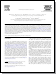

Citing Klusters, NeuroScope and NDManager
If you use Klusters, Neuroscope or NDManager for your analyses, please be kind enough to cite the following article in your publications:
.
Klusters, Neuroscope, NDManager: a Free Software Suite
for Neurophysiological Data Processing and Visualization,
J. Neurosci. Methods 155:207-216.
Downloading and Installing the Applications
We hope to be able to provide installers soon. In the meantime, you will need to download and build the sources. While we cannot provide instructions for this, you can try to adapt the step-by-step instructions provided here for GNU/Linux.
Alternativly we also support installation via homebrew unsing the the tap FloFra/spikesorting and we plan to integrate the formulas into homebrew/science soon.
| Application | Version | Description | Installer | Source code |
|---|---|---|---|---|
| Klusters | 2.0.0 | Cluster cutting application |  |
|
| Neuroscope | 2.0.0 | Viewer for neurophysiological and behavioral data | |
|
| NDManager | 2.0.0 | Manager for neurophysiological and behavioral data | |